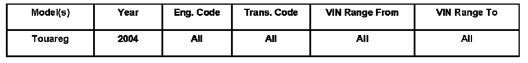
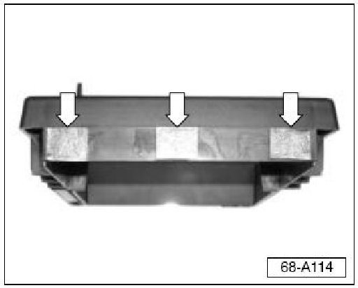
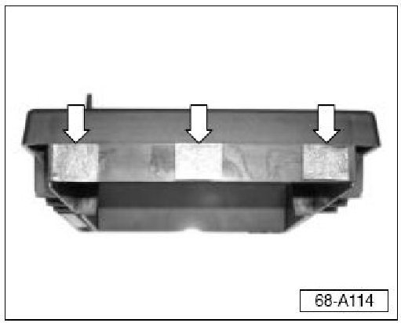
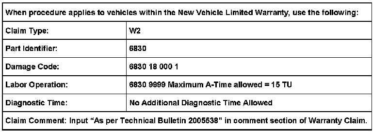

Interior - Rear Seat Arm Rest Cup Holder Loose
ConditionRear Seat Armrest, Increasing Cupholder Retention
Rear seat armrest cupholder loose in armrest.

68 06 03 Nov. 17, 2006, 2005538, Supersedes Technical Bulletin Group 68 number 03-02 dated Aug.14, 2003 due to inclusion into ElsaWeb.
Technical Background
Cupholder plastic retainer looses retention due to loose fit into the rear armrest.
Production Solution
Cupholder retainer was incorporated into the rear armrest starting with MY 2005.
Service

- Remove cupholder from rear armrest.
- Treat 3 areas (arrows) on front side of cupholder using 3M(TM)
Automotive Adhesion Promoter 06396 (obtain from local 3M(TM) dealer).
Apply to approx.area of foam dimension listed below.
Allow time for 3M� Automotive Adhesion Promoter 06396 to dry.

- Place 3M(TM) Vinyl Foam Tape VW part number ZVW837001 on cupholder at three places previously treated (arrows).
Foam dimensions are: 25.4 mm width x 18 + 2.0 mm length x 0.9 mm (1/8 inches) thickness.
- Install by inserting front bottom flange of cupholder in armrest first, then press cupholder down into rear of armrest with firm but gentle force.

Warranty
Required Parts and Tools
Description Part No:
3M(TM) Automotive Adhesion Promoter 3M 06396*
3M(TM) Vinyl Foam Tape (3M 06375) VZVW 837001
* Call Volkswagen Tools and Equipment Program (EQS), which is Equipment Solutions, for product.